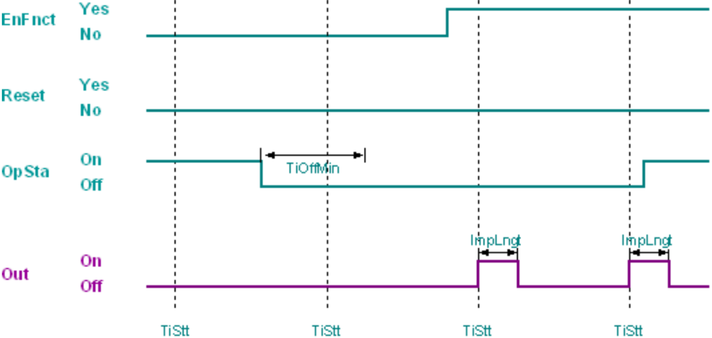
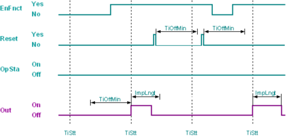

[KICKFNCT] 踢球功能
在最短关闭时间到期后，功能块 KICKFNCT 使用定义的脉冲长度在配置的时间生成输出 1。
泵和截止阀中的机械部件在长时间闲置后存在堵塞的风险。 KICKFNCT 定期短时间（在最短关闭时间后）开关泵或阀门，以确保正常运行。
开始时间 [TiStt] 和星期几 [DayWeek] 设置触发脉冲脉冲的时间和星期几。
脉冲长度 [ImpLngt] 决定突跳脉冲的持续时间。
一旦满足以下条件，突跳脉冲就会触发：
- Operating state [OpSta] was 0 for the minimum switch-off time [TiOffMin].
- The time for triggering the kick impulse is reached and the day of the week [DayWeek] and start time [TiStt] match the system time on the automation station.
- The function block is enabled ([EnFnct] = 1).

触发后，突跳脉冲在整个脉冲长度 [ImpLngt] 内保持（[Out] 设置为 1）。将 [Reset] 设置为 1 可取消正在进行的突跳脉冲。因此，输出 [Out] 设置为 0，并且最小关闭时间 [TiOffMin] 的内部定时器重新启动。通过将启用功能 [EnFnct] 设置为 0，可以取消正在进行的突跳脉冲。关闭启用功能 ([EnFnct] = 0) 后，将恢复运行状态 [OpSta] 的监控。最短关闭时间 [TiOffMin] 保持有效。

输入 | 描述 | 数据类型 | 默认值 |
|---|---|---|---|
EnFnct | Enable function 启用该功能。 | 布尔值 | 1 |
0 - 该功能被禁用。 | |||
Reset | Reset | 布尔值 | 0 |
0 - 不重置 | |||
OpSta | Operating state | 布尔值 | 0 |
0 - Off | |||
TiStt | Start time | TimeOfDay | 08:00:00.000 |
DayWeek | Day of week | 整数 | 1: Monday 1…7 |
1: Monday | |||
ImpLngt | Impulse length | 时间 | 5m |
TiOffMin | Min.switch-off time | 时间 | 6d |
输出 | 描述 | 数据类型 | 默认值 |
|---|---|---|---|
Out | Output | 布尔值 | 0 |